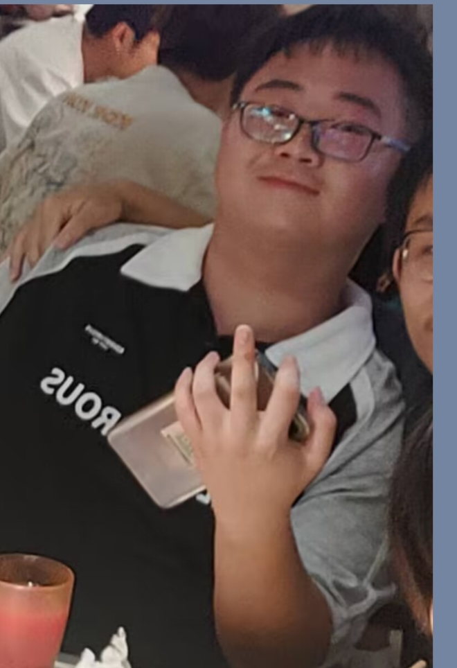

王朝洋
[成都七中 2年A班]
放学后的天台，微风轻轻吹拂着。你怎么会在这里？平时很少有人来这个地方呢...
因为想和你单独见面
只是想找个安静的地方看书
偶然路过而已，没想到会遇到你
存档
读档
设置
继续
我的七中恋爱物语果然有问题
开始游戏
继续游戏
游戏设置
关于游戏
关闭菜单
存档管理
存档
读档
存档位 1
2025-11-05 14:30
天台相遇 - 与王朝洋的第一次对话
存档位 2
无存档
点击创建新存档
存档位 3
无存档
点击创建新存档
存档位 4
无存档
点击创建新存档
游戏设置
背景音乐音量
80%
音效音量
100%
文本速度
慢速
中速
快速
瞬间显示
显示文本框边框
自动播放
重置默认
保存设置